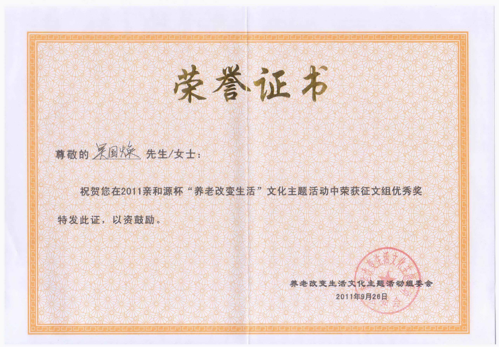
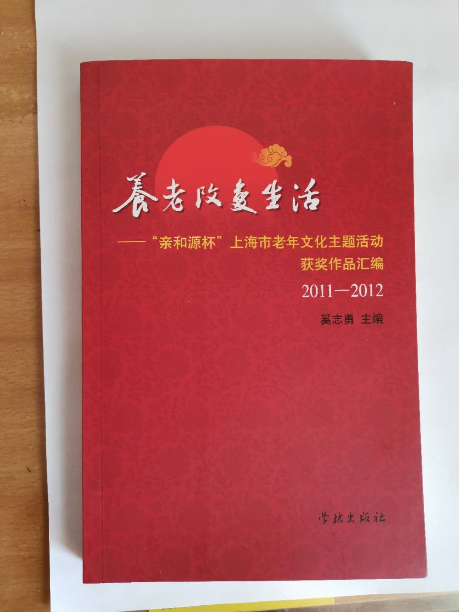

渐渐步入老年，终于到了退休的日子。又返聘了两年，令人留恋的筵席终究还是要散去。
放下了教师进修学院那份我所喜爱的、不断有所挑战的工作；离开了那群朝夕相处、充满活力的同事，心情难免有些惆怅、落寞。
每天的精力要有处释放、寂寞的精神要有所寄托，我又找回了儿时的最爱 ——乒乓球。
我常常在身体感觉有点“沉”、或者情绪有些“重”的情况下，挥拍上阵、与银球共舞。不屑一、二个小时，直“杀”得热汗横流、“沉”“重”尽散，换来一身轻灵、通体舒展。什么不开心的事，全部抛到九霄云外去了。
我把以前对待工作的那份专注转移到了乒乓球上。
有关乒乓球的每一件事，我都干得津津有味。为了配备精良的“武器”，我在“淘宝网”上反复搜索、对比，从品牌、性能、价格和网友们的评价等各方面精心考虑，淘来了合适的乒乓套胶、底板、胶水，自己加工乒乓拍子。用锉刀、沙皮在底板上打磨、将胶水在套胶上涂抹，一下又一下，每一下都好像是在给心灵轻轻按摩、带来全身心的愉悦。
我在互联网上下载了乒乓国手们的比赛录像，并截取其中精华的片段。王皓的直拍横打引起了我的浓厚的兴趣，看着录像模仿，又对着镜子纠正，我终于渐入佳境。每当我看准来球方向，用拍子的背面，将银球“啪”地一下横打回去，恰似一道白色的闪电。那种“爽”的感觉真是难以言表。以前，看见舞者从舞厅出来，虽然满头大汗，却又是满面春风、一副心满意足的样子，觉得不大好理解。现在，我恍然大悟：这恰似挥动球拍长拉短吊、推搓扣杀后，给人带来的畅快淋漓 ……
僻静的舒兰路上，有一座不起眼的“红双喜”乒乓馆。在这里，我找到了一群兴趣相投、酷爱乒乓的“老小孩”。
以球会友，真是人生一大乐事。这些乒友虽然大多上了年纪，但是打球十分执着、为人相当有趣，还时不时流露出孩子般的天真无邪。
老Z，八十有二。笃信“生命在于运动”。一年四季，无论刮风下雨，从不无故缺席。还善说笑话，给大家带来欢乐。一次，他患感冒，在医院打滴。大家顿时觉得缺少了些什么，正在牵挂。突然，老Z好像从地下冒了出来：“啊哟，实在手痒得不行，从医院溜出来了”。一副逗人喜爱的老顽童的模样。
S大姐，身强体壮、虚心好学。一次，来了二位高手，与大家一一过招、传授技艺。左右两张乒乓台前都排起了“长龙”。S大姐求技心切，居然两边排队，来回奔波。众人笑道：“S大姐把当年在菜场里排队买菜的劲儿都使出来了！”
W大哥，是个出了名的孝子。不但打得一手好球，还时时惦记着家中有一点点痴呆的老父。每每大家正打在兴头上，他却收起拍子、抹一把额头的汗水，说一声：“我要回家烧饭了”，便匆匆地走了。为了让老父高兴，有时他就推着车子带老父看自己打球。W大哥的孝顺，使乒友们颇为感动。
退休以后，与乒乓为伴。生活变化颇大、人生感悟良多。
寻觅快乐健康、提高幸福指数，是老年人生的一个重要命题。
与乒友们常聚首、共打球，切磋球艺、笑语喧哗。汗水出的多了、腿脚灵活多了、睡眠香甜多了、食欲增加多了。这些，自然都是实实在在的“幸福”。
我还领悟到：现在幸福太多，人便有些麻木，还常会自找些烦恼。如营养过剩，吃出“三高”；如：心胸狭窄，斤斤计较。
殊不知，幸福也是要靠自己创造的。一场乒乓打过，大汗淋漓之下，平时淡而无味的一杯白开水也会令人爽快无比、幸福满满。
“活到老，学到老”，不断学习，不断进步。这是老年人生较高境界的幸福。
喜欢打乒乓的人都愿意找比自己水平高的人打球，个中道理就两个字：“挑战”。乒乓犹如人生，人的一生又何尝不是这样呢？人的天性就是喜欢挑战的，人的一生都在追求。
时时兴趣浓浓、天天积极进取，直觉得身心充分释放、情绪持续饱满。刚退休时那份惆怅、落寞，早已烟消云散。
小小银球，我们深爱的国球，是你，丰富了我的退休生活。
（本文在上海市老年基金会举办的2011亲和源杯“养老改变生活”文化主题活动中，获征文组优秀奖。并由学林出版社结集出版，收录于《养老改变生活》一书。 刊登在2017.2.16《上海老年报》）

